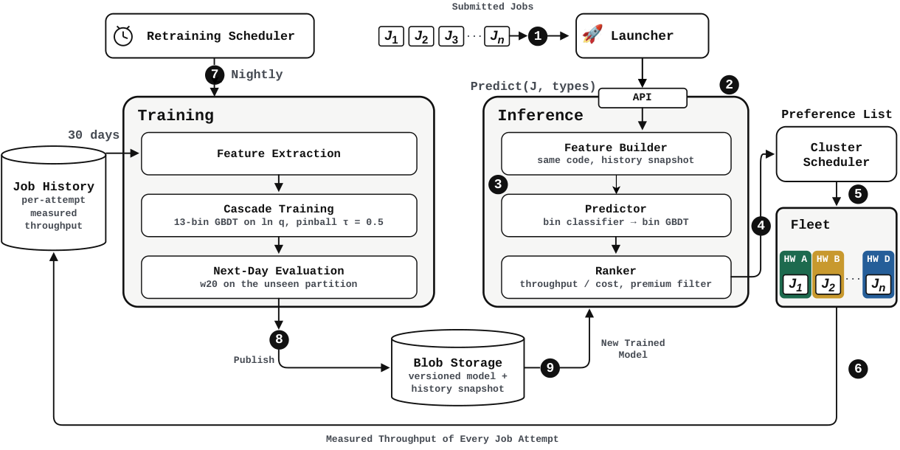
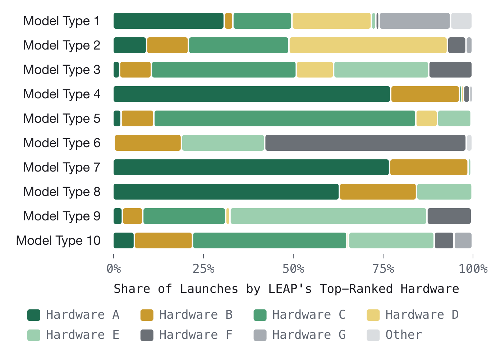
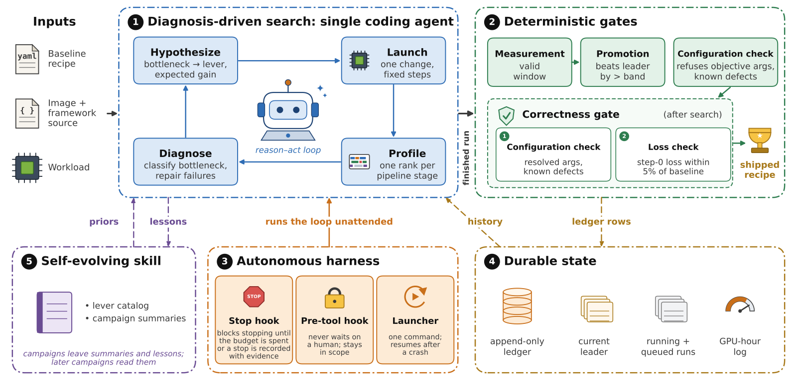
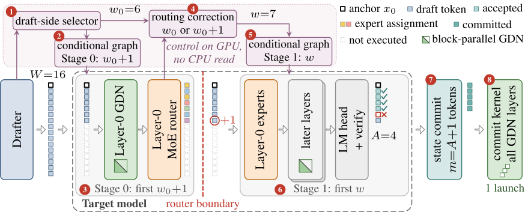
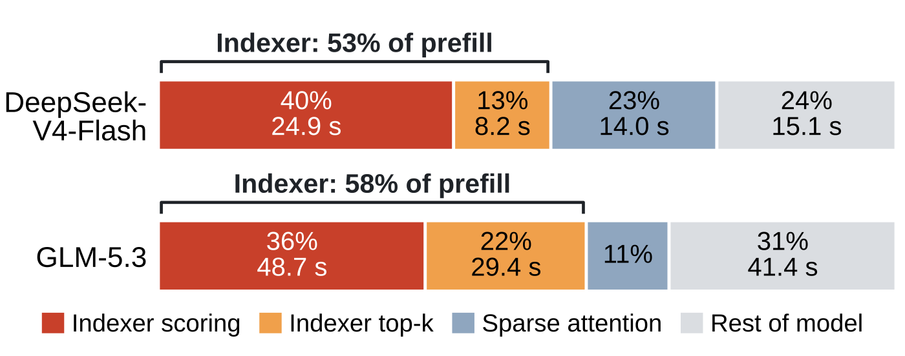
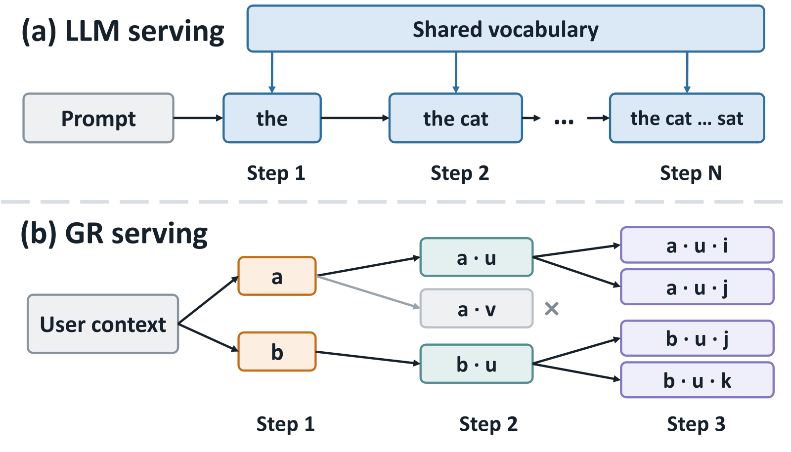

目录 · 9 节
1它到底在解决什么问题？2整体流程：预测只是选卡链条里的一环3为什么预测对数吞吐，还要分段？4最有用的特征：这个任务以前跑得多快5效果怎么样？6哪些改动真的提高了准确率？7我认为它的局限8一个训练平台团队可以怎么试9结论同一个训练任务往往能跑在好几种加速卡上，跑在哪种上最划算，取决于它在每种卡上的吞吐。任务放错了卡照样能跑完、不报错，多花的钱没人察觉。LEAP（作者在生产机群上部署的选卡服务）在任务提交时就预测它在每种候选卡上的吞吐，再按每花一块钱能换来的吞吐给这些卡排序，每天给数万次训练任务选卡。它有 77% 的预测和实测吞吐相差不到两成。半年后，能换卡的训练 GPU 小时里有 95% 都由它排过序，作者估计因此省下约 3% 的训练算力成本。管着混合加速卡机群的团队值得读：它把“放错卡不报错、只多花钱”这个看不见的浪费变成了一个能量化的预测问题，还讲清了哪些特征真能提高预测精度。
它到底在解决什么问题？
先看一个示意场景。一个排序模型的训练任务要用 64 台机器，机群里有两种卡都能跑它。
| 候选卡（示意） | 每小时成本 | 预测吞吐（样本/秒） | 每单位成本的吞吐 |
|---|---|---|---|
| 卡 A | 1.0 | 1,000 | 1,000 |
| 卡 B | 1.6 | 1,800 | 1,125 |
卡 B 更贵，但这个任务在 B 上的吞吐高出 80%，超过了 60% 的价差，所以按单位成本算 B 更划算。换一个通信更重、batch 更小的任务，结论可能反过来。难点在于：这张表要在任务还没跑之前填出来，而且机群里有二十多种卡。
论文里的机群每天大约跑 25,000 次训练任务，来自约 660 种模型。分布是长尾的：在论文统计的那一天，最少见的 560 种模型加起来占了 22% 的任务。只照顾头部模型的规则，会漏掉一大块工作量。
原来的做法是一张查找表：按模型类型、机器数、batch 大小和卡型查一个历史吞吐。问题出在两处。第一，这四项定不住吞吐：56% 的任务，同一个查表键下吞吐的第 10 和第 90 百分位相差超过 1.5 倍，所以任何单个预测值都不可能让这些任务全部落在 ±20% 以内。第二，表里只有 19 种模型，在一个留出日上只给 13% 的任务查到了值。
整体流程：预测只是选卡链条里的一环

整条链路分三段，LEAP 只负责中间一段：
- 任务启动器先决定这个任务能用哪些卡型。
- LEAP 给每种候选卡造一行特征：任务配置照原样放进去，再加上这种卡的硬件规格和这个任务的历史特征。然后预测吞吐，除以这种卡上的成本得到分数，按分数从高到低排成偏好列表。
- 集群调度器把列表当偏好而不是硬约束，再按实时空闲容量决定任务放在哪种卡上。
有两个工程选择，一个管速度，一个管安全。预测库直接链接在启动器里，一次选卡就是一次函数调用，不走网络请求。任何失败，比如候选为空、缺特征、模型文件加载不了，都退化成空列表，调度器就当没有 LEAP 一样放任务。这样 LEAP 出问题时，最坏情况也只是回到原来的做法。
为什么预测对数吞吐，还要分段？
吞吐的跨度极大。在一天 22,495 行数据里，实测吞吐从个位数一直到一百多万，跨了七个数量级。就算只看同一种卡，第 95 和第 5 百分位也差 42 到 701 倍。直接回归原始吞吐，误差会被最大的那批任务主导。
所以 LEAP 预测的是吞吐的对数，损失函数取中位数的分位数损失，也就是对数空间里的绝对误差的一半。取指数后，得到的是吞吐的条件中位数。
只用一个回归器，两端的任务仍然拟合不好。LEAP 的做法是把任务按吞吐高低切成 13 段，每段训练一个梯度提升树回归器，每个回归器只管自己那一段的吞吐范围： Hoot 说

点箭头看四步。第 2 步的数字是示意。要记住的是：训练时用真实吞吐给行分组，线上只能靠分类器猜组，猜错了就由不合适的回归器来答。 出处: 论文 §2.2 的分段训练和线上预测公式：13 个等频段，最多 3 轮交替，换段少于 2% 提前停，分类器只看特征选段
- 先按对数吞吐把训练行等频切成 13 段，每段拟合一个回归器。
- 再把每一行重新分给预测它最准的那个回归器，然后重新拟合。这样交替最多三轮，换段的行少于 2% 就提前停。
- 最后训练一个分类器，只看特征来判断一行属于哪一段。线上不知道真实吞吐，只能靠它挑回归器。
举个示意例子：一个小任务的真实吞吐是 50 样本/秒，一个大任务是 50 万样本/秒。分类器先判断它们各落在哪一段，精确数值交给擅长这一段的回归器去算。实际要在 13 组里挑一个：分类器学的是重新分配之后，每一行最终归到哪个回归器。挑错了，就由不擅长这一行的回归器来答。
这套分段级联在后面的消融里只多了 0.5 个点。作者自己说，同一天上一两个点的差别还在每晚之间的波动范围内。所以真正明确的提升来自下文的模型结构特征和更深的树，分段只算锦上添花。
最有用的特征：这个任务以前跑得多快
一个任务是否跑过、跑得多快，是训练好的模型最依赖的信号。LEAP 对每个任务族记录上一次的对数吞吐、历史均值和标准差、跑过几次、距上次多少天。为了不在任务启动时再多做一次按任务名的查询，每次训练时把最多 25 万个任务族的统计做成快照，和模型一起发布。任务族按去掉运行编号后的任务名来认。线上只重新算距上次多少天。快照里没有的任务算冷启动，填一个明确的缺省值，而不是填 0。
打乱单个特征看准确率掉多少，排第一的是历史对数吞吐的均值，掉 36.7 个点，其次是机器数和 batch 大小。卡型的硬件规格只占总重要性的 5.8%。作者提醒这个数偏低：各项规格总是一起变化，打乱其中一项，其余几项仍带着同样的信息。同样的道理，这个排名说的是模型有多依赖某个特征，不等于去掉它会损失多少。后面的消融里，加上历史特征只多了 2.5 个点。作者的解释是，去掉历史特征重新训练时，模型能从相关的特征（比如任务规模）里找回一部分同样的信息。
效果怎么样？
先看和旧查表的正面比较。作者从一个留出日里取出 7,131 个任务（来自 276 种模型）比较两者，查表只给其中 946 个给出了值，LEAP 全都有。只在查表覆盖的这 946 个任务上比，结果如下（数字取自论文表 1）：
| 方法 | ±10% 以内 | ±15% 以内 | ±20% 以内 | 预测与实测之比的中位数 |
|---|---|---|---|---|
| 查表 | 33.4% | 45.0% | 53.2% | 1.11 |
| LEAP | 72.1% | 80.6% | 85.1% | 1.00 |
这 946 个任务本来就是查表最擅长的那批模型，LEAP 在这里仍高出 30 多个点。这说明旧方法的问题不只是覆盖率低，查表键本身就定不住吞吐。
再看长期表现。连续 30 次每晚重训，每次都在训练窗口之后的那一天上打分，±20% 以内的比例中位数是 77.0%，最差的一晚 73.5%，最好的一晚 80.6%。每晚之间差几个点，说明单看一天的结果容易被波动带偏，所以作者用 30 晚的中位数当主指标。
收紧误差范围也还站得住。在另一个用于模型对比的留出日上，误差在 ±10% 以内的有 68.9%，误差的中位数是 6.9%，说明多数预测其实相当准。
上线影响方面，2026 年上半年，能换卡的训练 GPU 小时里拿到 LEAP 排序的比例从 58% 涨到 95%。拿到排序不等于跑在第一选择上：在 8 月的六天里，只有 19.9% 的任务、30.0% 的 GPU 小时跑在排第一的卡上，因为调度器要看容量。能被 LEAP 选卡的任务约占机群训练成本的一半，作者估计整体省了约 3%。

上图说明了为什么不能写死规则。同一种模型的不同次提交，机器数、batch 大小和可用卡型都不一样，最划算的卡也就跟着变。以论文里的模型类型 1 为例，它一周有 5,527 次提交，有四种卡各自在 16% 到 31% 的提交里排第一。
哪些改动真的提高了准确率？
作者在一个固定的留出日上，从一个基础梯度提升树开始逐项加改动（这一天比平均难度低，所以绝对值偏高，只看差值）：
| 配置（逐行叠加） | ±20% 以内 |
|---|---|
| 梯度提升树基线 | 72.3% |
| 加任务历史特征 | 74.8% |
| 加由配置算出的比值特征 | 76.6% |
| 加模型结构特征 | 80.7% |
| 换更深的直方图梯度提升树 | 82.8% |
| 换成 13 段级联 | 83.3% |
比值特征由提交时的配置相乘或相除得到，比如所有机器加起来的总 batch、数据读取进程数和训练机器数之比，不需要知道真实吞吐。提升最大的是模型结构特征，也就是从模型定义里提取的 44 个汇总值，比如层数，加了 4.1 个点。13 段级联只多了 0.5 个点。
换模型家族都没赢。LightGBM 是 69.4%。最接近的是 TabPFN v2（一个在合成表格数据上预训练、靠上下文里的相似样本直接预测的 Transformer），79.1%，但它线上要用 GPU，还要先检索相似样本。微调 Gemma 3 27B 让它直接以文本输出吞吐，只有 69.0%；用 LoRA 微调的 Llama 4 只有 50.8%。把任务配置写成文本、用 Qwen3-Embedding 编码再接一个小网络，最好的配置也比级联低 3.7 个点（这组在另一个留出日上比较）。作者认为可能的原因是：文本 token 保不住数值的大小，而吞吐主要取决于机器数、batch 大小这些数值。
唯一追平的是基于计算图的神经网络（作者复现的 DNNPerf）。这组比较换了评测设置：在另外三个评测日的同一批任务上、按 10 个随机种子取平均，它和级联模型都是 77.4%。但它线上要用 GPU，还要维护约 400 GB 的计算图缓存，而且去掉计算图只掉 0.25 个点。对每天要调用数万次的选卡服务来说，这些代价不值得。
我认为它的局限
第一，新卡型没法冷启动。作者用对比用的计算图模型做了留出测试：训练时拿掉一种卡型，准确率掉 37 个点；随机拿掉同样多的行只掉 1.7 个点。论文说级联模型同样外推不到新卡型。新卡必须先跑一批真实任务，第二天重训后 LEAP 才能给它排序。
第二，新模型族同样吃亏。拿掉一个模型族，级联掉了 49.7 个点，计算图模型掉 37.0 个点。原因很可能是分类器没法把一个没见过的模型族放进正确的吞吐段。
第三，两个头条数字都要打折看。77% 按任务次数平均，不按 GPU 小时加权，占了大部分 GPU 小时的少数大任务在里面分量很小。省下的 3% 是估计值，而且只有 19.9% 的任务真正跑在排第一的卡上：预测再准，好卡满了也换不过去。
一个训练平台团队可以怎么试
- 先算浪费有多大：拿同一类任务在不同卡型上的历史吞吐，看按单位成本算的最优卡和实际用的卡差多少。差得不多就不值得做。
- 从最简单的版本开始：用梯度提升树预测对数吞吐，特征只放任务配置、卡型规格和这个任务的历史吞吐。用“预测落在实测 ±20% 以内的比例”评估，并且只在训练窗口之后的日子上打分。作者提到，早期在训练窗口内打分，把准确率高估了 20 多个点。
- 只把排序当偏好交给调度器，失败就返回空列表。这样上线风险可控，也能按模型类型逐个放量。
- 有余力先加模型结构特征，分段级联可选。新卡型可以在进入选卡之前，先拿一小批代表性任务跑一遍，这是作者提出的后续做法。
结论
最关键的启发是：选卡这件事，难的不是模型多复杂，而是在任务跑之前拿到靠谱的吞吐估计，而这个估计主要来自任务自己的历史、规模和模型结构。
| 维度 | 评价 |
|---|---|
| 问题重要性 | 高。能换卡的任务约占训练成本的一半，放错卡不会报错，浪费长期没人发现 |
| 方法创新性 | 中。核心是梯度提升树加分段级联，价值在于把它做成了每天调用数万次的线上服务 |
| 实验证据 | 较强。30 晚滚动评估、与旧查表正面对比、多种模型家族的消融；省下 3% 成本是估计值 |
| 工程成本 | 低到中。纯 CPU 推理，嵌在启动器里；主要投入是特征表和每晚重训流水线 |
| 是否值得尝试 | 有多种卡型、且任务能在卡型之间切换的训练平台值得试 |
读完这篇，你觉得
夜读鸮记下了，谢谢你的反馈。
点一下即可，无需登录；再点一次撤回。只统计匿名次数，不记录你是谁。
相关论文RELATED

Infra · 2026-10-25ATTUNE: Agentic Throughput Tuning for LLM Training同一个大模型换一种 GPU 或换一个框架版本，原来最快的训练配方往往不再最快，配方要定的是模型怎么拆到多张 GPU 上、用哪些底层计算程序、GPU 之间的数据传输怎么和计算同时进行。ATTUNE 让一个能写代码、跑命令的智能体来调配方，给它一份能跑通的配方和一笔 GPU 小时预算，它自己反复试、自己分析瓶颈。但这篇论文真正的看点在智能体之外，一道由固定代码执行、智能体改不了的正确性闸门：模型、数据、每步处理多少条、数值精度都锁定不变，凡是会悄悄改变训练内容的改动，比如丢掉超额的训练词，在启动前就被拒绝。三个模型的微调任务换上调好的配方后，训练速度平均提高到原来的 1.7 倍，最多 3.9 倍。
Infra · 2026-11-05HybridSpec: Throughput-Aware Speculative Decoding for Hybrid GDN-MoE Models给混合了 Gated DeltaNet（GDN，带循环状态的线性注意力层）和 MoE 的模型做投机解码，每轮验证几个草稿 token 不能照搬稠密模型的设定。在一个 Qwen 混合模型上，一轮验证的 token 数从 4 加到 16，验证耗时涨了 71%。HybridSpec 每一轮给每个可选长度打分：按草稿置信度估出的预计产出 token 数，减去这段验证耗时按平均速度本可产出的 token 数。目标模型跑到第一个 MoE 路由器时，再看多验一个 token 会多用几个新专家，把这部分耗时算进得分，划算才多验。在三个这类模型上，同用 DFlash 出草稿，速度是每轮验满的原版 DFlash 的 1.3 倍左右。
Infra · 2026-11-04AttentionIndex: Accelerating Learned Sparse Attention with a Causal Inverted-File IndexDeepSeek-V4、GLM-5.3 这类学习式稀疏注意力里，每个 query 只对 k 个键做注意力，但挑出这 k 个键的小打分网络仍要给前缀里的每个键打一遍分。上下文到 100 万 token 时，这一步占了 prefill 时间的一半以上。AttentionIndex 大幅压低了这一步的开销：它在 prefill 过程中把键按相似程度分成一组组，query 先给每组的代表打分，只把最有希望的几组成员交给原来的打分网络细选。在这个长度上，它的 prefill 吞吐是逐个打分的 1.3 到 1.8 倍，也比速度相近的分块方法 HiSA 漏选得少。
Infra · 2026-11-11RecoGEM: A Serving System for Production-Scale Generative Recommendation生成式推荐和大模型一样逐 token 解码，直接搬 LLM 的推理服务栈却跑不好，快手这篇 RecoGEM 讲清了原因。大模型的注意力开销在长序列上，生成式推荐每条候选只看几个 SID，开销转到 beam 展开后的海量短行上。每一步的词表和张量形状还各不相同，top-k 选择也成了关键路径上的重活。他们把步间的候选状态和线上更新交给独立的运行时，引擎按每一步的形状单独编译。在线上 OneModel 负载上，单实例超过 1000 QPS，P99 低于 35 毫秒，吞吐是换回统一形状和普通 kernel 的同系统版本的 2.88 倍。生成式推荐的开销集中在短序列和大候选集上，推理服务要按这个形状来设计。
讨论
欢迎补充实验细节、复现经验或不同看法。需 GitHub 登录。
正在加载讨论…